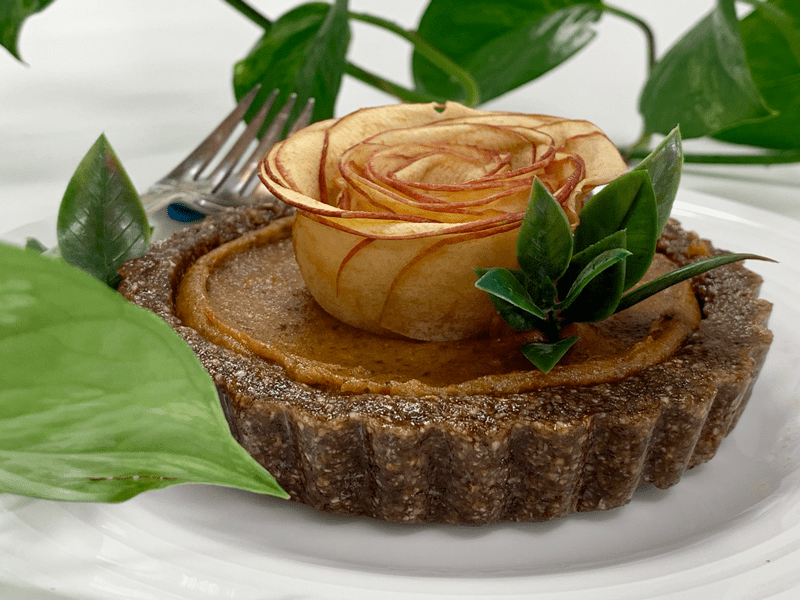
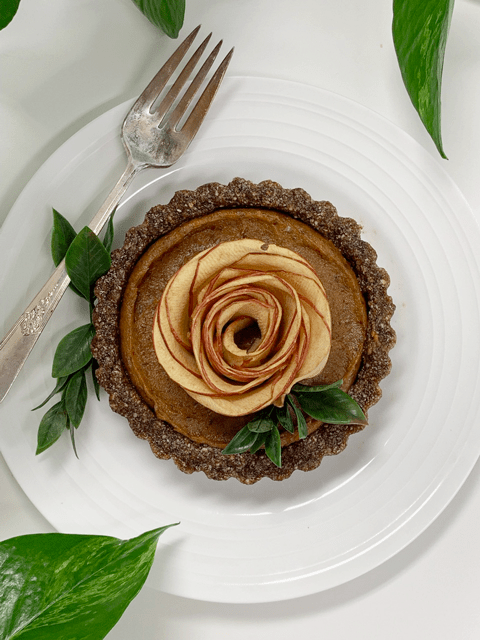

Antique Apple Blossom Date Butter Tart
– raw, vegan, gluten-free –
Good day, my friends. So happy that you selected to take a peek that this recipe. Putting this dessert in front of a friend or loved one is a surefire way to show them just how special they are. I get many emails from fellow readers who ask me how to save time in the kitchen. Especially people wanting to know what food staples I recommend to have on hand. Today, I will share two staples that you should have tucked away in your freezer, just waiting for inspiration to hit.

First raw pie crusts/tart shells. Right now, I have about 15 various tart shells in my freezer, ready and waiting to be used. The key is to keep them well protected from freezer odors and from ice crystals. Once the tarts are made, I freeze them on a cookie sheet. Once they are frozen, I wrap each one individually with cling wrap. I then slide them into a freezer-safe Ziplock bag. Be sure to label them along with the date that they were made.
Next, you need to slide them into a protective container, so they don’t get bounced around during storage. Now you have a sweet raw staple ready and waiting for your next creative desserts. You can fill these tarts crusts with raw cheeses, date paste mixtures, fresh fruit, cheesecake batters, and so forth. Make both savory and sweet treats.
Next, I like to keep date paste on hand at all times. I make large batches and freeze it in a freezer-safe container. The beauty of date paste is that it doesn’t freeze solid. You can reach in and grab a few spoonfuls out as needed, plus it will keep for 6-12 months in the freezer. Date paste can be used as a sweetener in a recipe, in smoothies, used as a frosting, or spread on your morning bread.
Take note of these tips… I want you to be successful in your culinary journey to healthier eating and being prepared is one surefire way to stay the course.
So this dessert was created on the spur of the moment. I made up some of my Antique Apple Blossoms, pulled a few tarts out from the freezer, grabbed some date paste, blended it up with some extra spices… and poof! This rustic, elegant dessert was born. I hope this recipe gives you encouragement and inspiration. Please keep in touch by leaving a comment below and have a blessed day, amie sue

Ingredients:
Yields 3 (4″) tarts
Preparation:
- Place a tart crust in the center of a serving plate.
- In the food processor or blender, combine some date paste and Apple Pie Spice.
- Depending on how many you make, you may need to adjust the amount of spice needed. Taste test as you go.
- I didn’t include a recipe because you can make just one or 10 of them! Just load the tart even with the top of the crust.
- Spread the date paste mixture in the tart and place an apple blossom on top. Garnish with a fresh herb leaf and serve! Easy Peasy. :)
© AmieSue.com